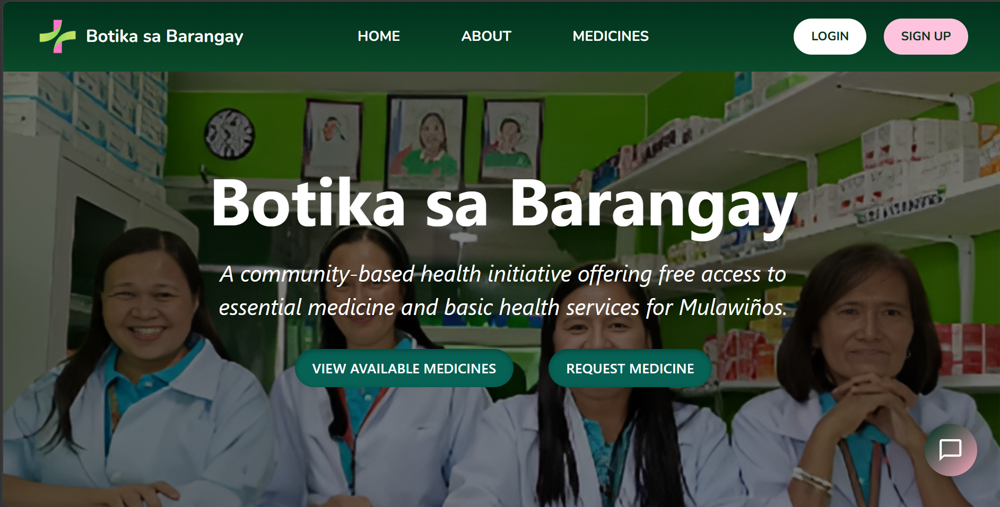
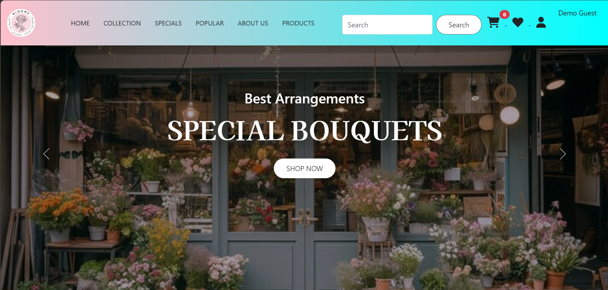
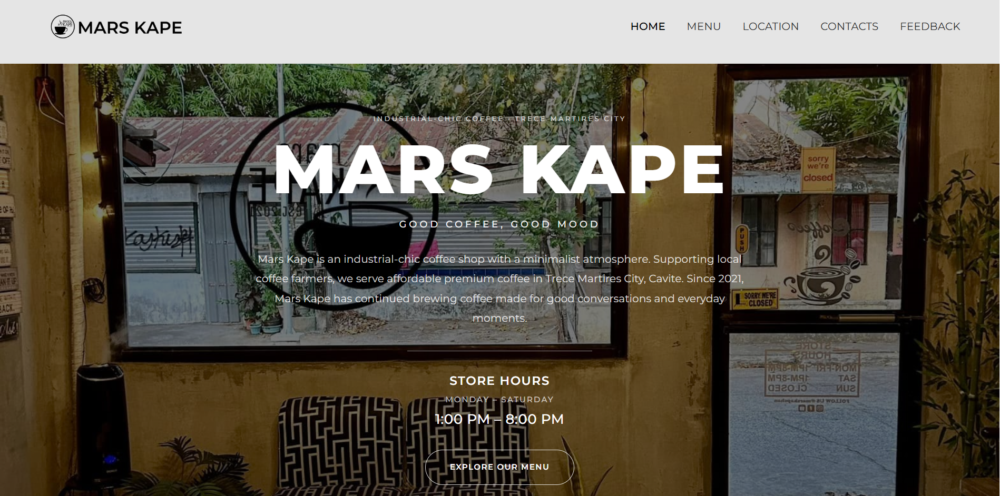

Open to junior technology opportunities
I turn ideas into practical digital systems.
I'm Katrina Mae Apostol, an Information Technology graduate with hands-on experience in web development, databases, system testing, and data management.
IT Graduate · Developer
Katrina Mae Apostol
Building useful technology with purpose.
<build>
solve(realProblems);
</build>
WEB DEVELOPMENT✦
DATABASES✦
QUALITY ASSURANCE✦
TECHNICAL SUPPORT✦
UI / UX✦
EMERGING TECHNOLOGIES✦
WEB DEVELOPMENT✦
DATABASES✦
01 / About
Building with purpose,
learning with curiosity.
BS Information Technology
From student projects to real-world systems.
My work sits at the intersection of technology and practical problem-solving. I enjoy transforming requirements into usable systems, testing how those systems behave, and improving the experience for the people who rely on them.
From developing a barangay medicine distribution platform to creating e-commerce projects and working with production data during my quality assurance internship, I have built a foundation across the software lifecycle. Skills for design and development to testing, documentation, deployment, and user support.
BSITInformation Technology
3Featured projects
QAIndustry experience
02 / Selected work
Projects that show
how I build.
Academic and capstone work across full-stack systems, e-commerce, responsive interfaces, and real-world deployment.
01
Featured Capstone · Full-Stack System
BotiCard
QR Code-Based Green Card System for Barangay Mulawin
A web-based medicine distribution and inventory management system built to improve resident verification, medicine requests, stock monitoring, claim processing, record management, and reporting.
QR-based resident verification
Role-based user access
FIFO inventory management
Reports & analytics
OTP account verification
Deployment & user support
PHPMySQLJavaScriptBootstrapChart.js
02

E-Commerce · Academic Project
Blooms Flower Shop
An e-commerce project for browsing flower products, managing a cart, user accounts, checkout, and administrative product management. A static portfolio demo is available through GitHub Pages.
PHPMySQLHTMLCSSJavaScript
03

Front-End · Academic Project
MarsKape
A responsive coffee shop website created as a school web-development project, focusing on layout, responsive design, Bootstrap components, and interactive interfaces.
HTMLCSSBootstrapjQuery
03 / Experience
Experience beyond
the classroom.
Feb — May 2026
Quality Assurance Intern
Ushio Philippines, Inc. · First Cavite Industrial Estate
- Developed and maintained an Excel-based database for a production line to keep records accurate and organized.
- Performed quality checks on production data and material reports and supported operational reporting.
- Worked with team members and established procedures to maintain reliable documentation and daily operations.
2025 — 2026
BotiCard Capstone Project
System Development · Testing · Deployment · Support
- Contributed to the development of a deployed web-based information and inventory system.
- Performed system testing, debugging, troubleshooting, and feature validation before implementation.
- Provided first-line technical support and user guidance during system testing and barangay implementation.
04 / Achievement
A milestone in
hands-on innovation.
One of my most memorable technical experiences was competing with an Arduino-based project and earning second place.
2ndPLACE
Arduino Competition · January 24, 2025
2nd Place — CaneforCare
Cavite State University – Trece Martires City Campus
Our project, CaneforCare, achieved Rank 2 in the Arduino Competition. The experience strengthened my practical skills in programming, hardware integration, teamwork, creativity, and problem-solving.
05 / Toolbox
Skills I bring to
the table.
I prefer showing practical capability rather than percentage bars. These are technologies and areas I've worked with.
Development
Data & Systems
Tools & Practice
Have an opportunity or project in mind?
Let's build something
useful together.
I'm currently growing my career in technology and interested in junior roles involving software development, technical support, quality assurance, AI, automation, and related areas.